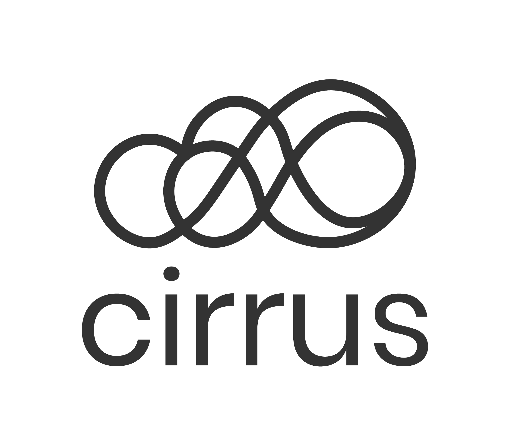

Cirrus
Cirrus
A cloud storage aggregator that makes finding a document in any of your cloud drives simple.
Problem
With so many cloud storage platforms on the market, cloud storage users are frustrated when they have to navigate between several cloud drives to find the file they are looking for.
Solution
Cirrus brings all of a user’s cloud drives into one easy to access location. The user can search across all drives, upload files to a specific drive, share files, and edit files in the native platform, removing the need to navigate back and forth between drives.
Roles
- Product Designer
- Brand Designer
Tools
- Sketch
- InVision
- Adobe Illustrator
- Adobe InDesign
- Google Forms
Deliverables
- User Survey + Analysis
- Competitive Analysis
- User Personas
- User Stories + Flows
- Wireframes
- Usability Testing + Analysis
- High Fidelity Mockups
- Clickabile Prototypes
- Brand Assets
- Style Guide
Discovery
This client was looking to break into the cloud storage market. But with so many big players in the game, they knew that recreating the wheel wouldn’t be the right approach. After completing user research, a new problem came to light: users wish they could connect their existing cloud platforms.
User Research
The majority of current cloud storage users had 4 or more different cloud drives each. Their most used platform was Google Drive, followed by Dropbox and iCloud.
The majority (94%) of these users rely on both mobile devices and laptop computers to access their storage.
Biggest Pain Point
When the respondents were asked, “Are there any features you wish your cloud storage platform(s) had or wish you could improve?”
30% of respondents wanted to connect existing cloud platforms so all user files would be easy to access from one place.
The majority (53%) of respondents said they would be likely or very likely to use a cloud aggregator.
Competitive Analysis
- Easy to create several file types
- Easy organization tools
- Ability to search all files
- Gmail account required to access all features
- No bookmark link feature
- Integrates with Microsoft Office
- Native word documents
- Ability to search all files
- Important features can be difficult to locate
- Cloud aggregator
- Links out to native files for easy editing
- Ability to upload files to a specific drive
- Cannot search through all files
- Cannot reorganize files
After evaluating the strengths and weaknesses of other popular cloud drives, the path to success in this market will require these important features:
- A way to search through files on all connected drives
- Access to create, view, edit, and organize files within the platform
- A way to easily save links, photos, and videos from the web
- Web and mobile apps
User Personas
Personal User
Joanna
Travel Writer | Age 29 | Los Angeles
Joanna travels often and enjoys taking personal photos and journaling in addition to writing for work.
She uses one cloud storage app to back up her photos, another to do her journaling so she can travel light, and she uses yet another app to save articles and funny videos she finds while she’s waiting for her next train or plane.
She gets frustrated when she has to switch back and forth between apps.
Her goal is to have a central place to access all the photos, videos, and links she saves.
Work/School User
Timothy
Project Manager | Age 32 | Chicago
Timothy is in charge of receiving and distributing materials to clients on behalf of his team.
He finds that he and his clients seem to always be using different cloud storage platforms to share materials. Because of this, he has several cloud drives open on his computer at the same time, and finds it frustrating to navigate back and forth to remember where a client sent a file.
His goal is to have an easy way to find and share files while letting everyone continue to use the platform that works best for them.
Information Architecture
The information gathered about our users and potential competitors allowed me to start getting specific about what the user will want to do and how they will be able to do it.
User Stories
Keeping the target audience in mind, user stories were developed to represent the most important tasks a user would want to complete with this solution:
- View all of my cloud files
- Upload files and folers
- Organize my files
User Flows
These tasks were then translated into user flows to articulate the steps a user would take in each situation.

Sketches + Wireframes
After finalizing the user flows, it was time to see what they would look like in practice - starting with paper sketches then translating them into digital mockups.
Dashboard | Mobile
Upload File | Mobile
Usability Testing
A clickable prototype was created from the digital wireframes, and tested with users before going too far down any design path. Users were given three tasks to complete: creating an account, uploading a file, and organizing that file into a different folder.
This round of testing helped me realize that because some of the users weren’t familiar with cloud storage apps, they also weren’t familiar with common design patterns used such as the Material Design Floating Action Button (FAB).
During the desktop test, users weren’t confident about:
- Where the sidebar navigation links would take them and where they currently were
- What the FAB was for
- What the tridot button was for
After this feedback, I was able to rethink components and make them more clear to the users.
Desktop Changes
FAB: Move into sidebar and add label
Tridot Menu: Add label
My Drives: Move into main dashboard for easy access
Navigation: Update locations and add stronger location indicator

A closer view of the desktop dashboard's FAB and tridot menu
Mobile Changes
My Drives: Move into main dashboard
Bottom Navigation: Update locations and change to top Tab Bar
The original mobile dashboard showing the bottom navigation bar
Branding
The users of this app will be looking for an easy, intuitive experience. I wanted the brand to convey a clean, modern, and friendly atmosphere to help the user feel calm, focused, and productive.
Cirrus
The name Cirrus was chosen because cirrus clouds are the highest group of clouds, representing the app as an all-encompassing cloud drive aggregator.
<<<<<<< HEADA moodboard helped me gather inspiration for brand colors and feelings
Colors
The brand colors were selected for their meanings: coral for creativity and energy; teal for calmness and focus; lavender for calmness and creativity.
Typography
Poppins and Avenir were chosen for the fun and friendly, rounded nature.
Logo Sketches
=======A moodboard helped me gather inspiration for brand colors and feelings
Colors
The brand colors were selected for their meanings: coral for creativity and energy; teal for calmness and focus; lavender for calmness and creativity.
Typography
Poppins and Avenir were chosen for the fun and friendly, rounded nature.
Logo Sketches
>>>>>>> checkpoint-15-9-css-stylingEarly sketches of logo designs
I knew that I wanted this logo to show users that this is a cloud related app and also express connectivity, so I chose my final design based on this idea.
Final Logo
The final logomark is created from several circles that connect together to form a cloud, mirroring how the app will connect user drives to create one cohesive experience. The cloud shape is not that of a traditional Cirrus cloud, but gives a nod to the symbol traditionally used for cloud-based apps.
Visual Design
Now that the branding was finalized, I was able to build out the visual design of the app and incorporate the usability testing feedback.
Mobile
The new user dashboard shows the user which cloud drives they have connected and gives them an easy way to add more. The new tab bar navigation allows them to easily switch back and forth between the Dashboard and All Files view.
Desktop
Updating the FAB and Options buttons to have a text label helps users to better understand what they will do and allow them to more easily complete their desired tasks. The updated navigation indicators show much more clearly where a user is located.
Final Tests + Prototypes
After implementing the visual design and feedback from the first round of user testing, it was time to take it back to the users to see if the changes improved the user experience.
Preference Testing
There were some components where I considered multiple designs, so I chose to let the users decide with preference testing.
Burger Menu on Mobile: Users preferred the bright impact of design option 1
Options Button on Desktop: Users preferred the first button design that was a little more subtle, but there when they needed it.
Usability Testing
A new group of users was recruited and given the same tasks as the first group: creating an account, uploading a file, and organizing that file into a different folder. This group was also asked branding questions to determine what the design choices communicated.
The new Options button worked much better for users than the original tridot menu on mobile.
The new Options button on desktop was much more successful than the tridot menu
However, there was still some confusion about whether the “Add New” button would add a new file or add a new cloud drive.
The "Add New" button on desktop still wasn't clear to some users
The new "Add" button next to the Connected Drives section was confused for the FAB when a user was asked to upload a new file.
<<<<<<< HEAD ======= >>>>>>> checkpoint-15-9-css-stylingThe "Add" button next to the Connected Drives section that caused more confusion in the second round of testing
Finishing Touches
After the second round of testing, there were still a few changes to make.
Mobile
High Fidelity Version 2
High Fidelity Version 1
Original Wireframe
The Connected Drives section on mobile was updated to be more similar to the desktop version. Adding the “Add New Drive” button and grouping it with the other connected drives prevents the user from confusing it with the FAB.
Desktop
High Fidelity Version 2

High Fidelity Version 1

Original Wireframe
Since the “Add New” button still didn’t give all the users confidence they needed to take action, I updated the label to “Add New File” to be as specific as possible.
Conclusion
Creating this app was a really valuable experience. The thing I found most helpful during this process was multiple rounds of testing. Having testers that were not accustomed to using cloud drives turned out to be a big bonus - their experiences highlighted issues I might not have otherwise thought of, and reminded me that even if you’re using common design patterns, you can always make things a little more clear.
Cirrus solves a big problem for cloud users by offering a way for users to efficiently access all of their files in one place, saving them time and cognitive effort. Users no longer have to ask themselves, “Where did I save that file?” - with Cirrus, it’s simple.
Back to Case Studies